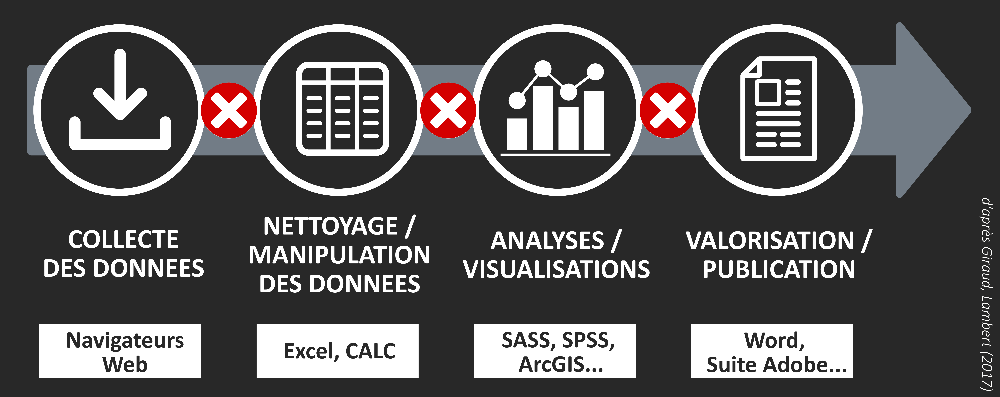
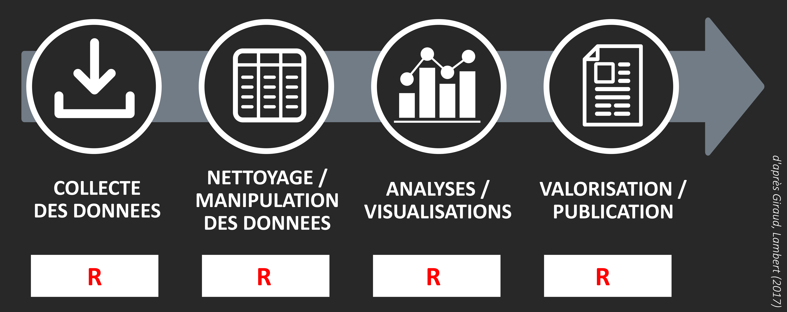
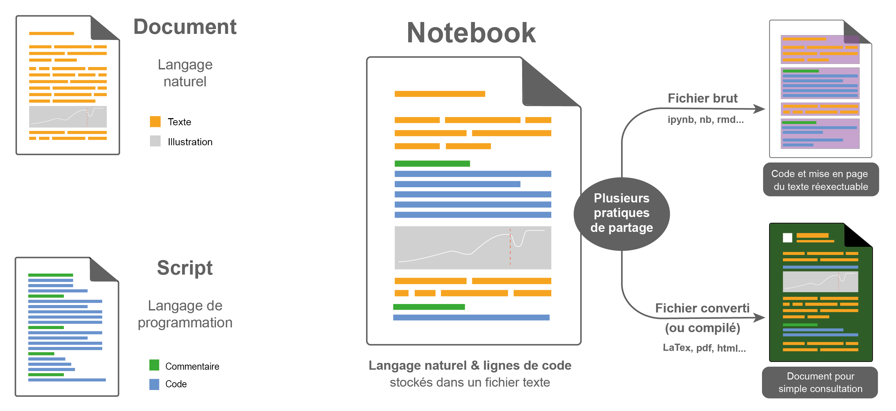
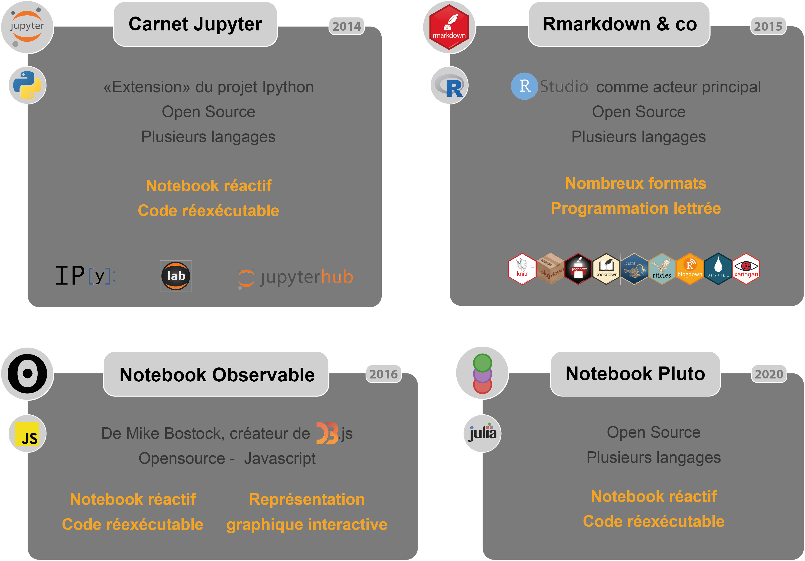
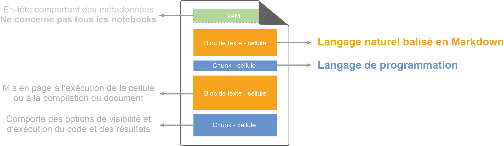
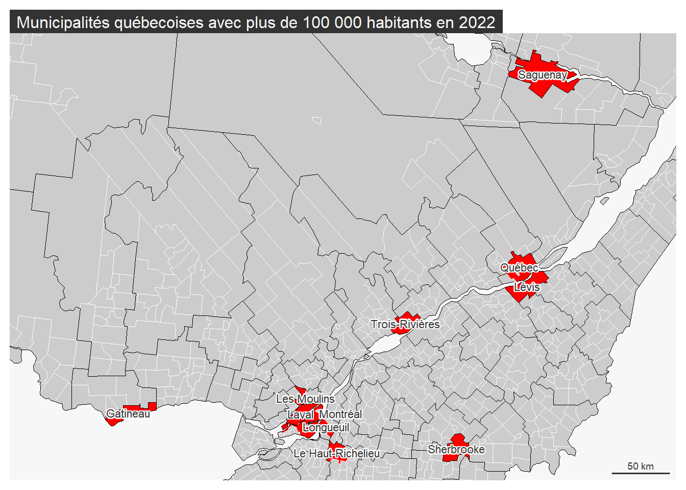

Articulation de différents langages (R, JavaScript et Python) pour la géovisualisation avec Quarto
Atelier Sageo, Québec, Juin 2023
Author
Timothée Giraud, Nicolas Lambert, Matthieu Viry, Ronan Ysebaert (UAR RIATE, CNRS, Université Paris Cité)
Présentation
Dans un contexte d’essor de carnets interactifs (Notebooks), l’objet de cet atelier consiste à montrer les possibilités offertes par Quarto, un système de publication scientifique et technique open-source basé sur Pandoc, qui permet d’articuler différents langages pour réaliser des géovisualisations reproductibles dans un seul et même document. Cet atelier proposera aux participants une prise en main des principales fonctionnalités offertes par Quarto, puis une mise en œuvre de chaînes de traitements de l’information géographique reproductibles avec R, Python et Observable JavaScript dans cet environnement.
Déroulé de la demi-journée
Installation des logiciels nécessaires à la mise en - place de l’environnement de développement (Quarto, R, Python, RStudio, Jupyter…). / A envoyer aux participants en début de semaine ?
Présentation et prise en main des principales fonctionnalités des notebooks Quarto. Présentation des écosystèmes spatiaux de R et Python, et, d’un jeu de données commun sur - lequel s’appuiera l’ensemble de l’atelier.
Traitement des données vectorielles : Mise en pratique d’une chaîne de traitements reproductible avec R, notamment grâce aux packages sf et mapsf.
Traitement des données raster : Mise en pratique d’une chaîne de traitements reproductible avec Python (bibliothèques geopandas, rasterio, matplotlib, nbdev, etc.).
Création de visualisations cartographiques interactives avec ojs (bibliothèques bertin, Plot, Gridviz, Deck.gl).
Export/publication du document quarto produit pendant l’atelier (templates de différentes revues scientifiques, slides, https://quartopub.com/, etc.).
Combiner plusieurs langages de programmation dans un notebook
A sortir du document principal et en faire une présentation à part ?
Evolution des pratiques
Avant : des “black-boxes” méthodologiques
Logiciels payants, ruptures logicielles dans les chaines de traitements, stockage et partage des données et méthodes non optimisé, univers “clic-bouton”.

Maintenant :
Solutions open source, gratuites, qui couvrent l’ensemble de la chaîne de traitement de l’information, univers de programmation.

Maintenant (et depuis peu)
Mise à jour de ce graphique en intégrant les dimensions Python, Js > plus forcément chaînes de traitement.
Pb : comment documenter et partager ses traitements ?
Création de bcp de scripts.
Compréhensible par soi (et encore, avec le temps)…
Transmettre, mettre à jour…
Recherche reproductible
Ouverture des protocoles de recherche dans l’objectif de confirmer et rendre répétable des résultats de recherche (Claerbout, 1992).
Disponibilité des données et du code, exécutable.
Documentation de l’environnement logiciel nécessaire à son exécution.
Transparence dans la collecte de données, ses traitements, analyses et sorties graphiques.
Réutilisable par d’autres : documentation du code, de ce qu’il produit et dans quel but.
Ouvert aux retours, commentaires, suggestions, critiques, révisions.
Programmation lettrée & notebooks
Paradigme de programmation (Knuth, 1984) qui consiste à associer code source (pour les ordinateurs) et documentation (pour les humains).
Donner les informations suffisantes pour répliquer l’expérimentation, à la manière d’un essai.
Vérifier que les conclusions sont valides.
Améliorer les programmes / rendre les mauvaises décisions de conception plus évidentes.
Utile pour reprendre les programmes ultérieurement.
Transmettre et partager les connaissances sous des formes appropriées (tutoriels, manuels).
Un gain général en reproductibilité de la démarche et en ouverture des méthodes scientifiques.
Notebooks : Principes fondamentaux
Le Notebook est solution opérationnelle et adaptée pour arriver à ces fins.

Source: Pecout, 2022
Les notebooks du moment

Source : Pecout, 2022
Squelette d’un notebook (RMarkdown / Quarto)

Source : Pecout, 2022
Le YAML en quelques mots
Le YAML est paramétrable en fonction du format de sortie désiré (HTML, PDF, présentations, etc.).
Pour le document de base (Quarto Document au format HTML), il est par exemple possible de jouer sur:
des paramétrages généraux (choisir un thème, définir une feuille de style css)
la table des matières (toc)
la numérotation des parties du document
les typographies utilisées
le choix des couleurs
l’affichage des blocs de code
l’exécution du code (afficher le code ou non, des messages d’erreur, etc.)
---title:"Articulation de différents environnements de développement de géo-visualisations. Atelier autour de Quarto : R, Pytho, et Observable JavaScript"subtitle:"Atelier Sageo, Québec, Juin 2023"author:"Timothée Giraud, Nicolas Lambert, Matthieu Viry, Ronan Ysebaert (UAR RIATE, CNRS, Université Paris Cité)"format:html:theme: sandstonefontsize: 0.9emcode-tools:truecode-fold:truetoc:truetoc-depth:2linkcolor:"#8631ad"editor: visual---
Le markdown en quelques mots
h1, h2, h3 bold, italic import figure
Paramétrer ses chunks en qqes mots
Des sorties multiples
Plusieurs formats de sorties : .HTML, .pdf, .doc
Largement documentés : Manuels d’utilisations, forums, etc.
Hautement paramétrable via le YAML et l’ajout éventuel de styles css.
Télécharger les données utiles à reproduire l’exercice (dépôt github à part) - Les données - Les scripts R, Python et Ojs.
Ouvrir le fichier projet.
Préparation des espaces d’étude avec R
On cherche à proposer une analyse systématique pour l’espace d’étude environnant les communes peuplées de plus de 100000 habitants de la province du Québec en 2022.
Cette préparation des données est réalisée avec R.
Warning: le package 'rmapshaper' a été compilé avec la version R 4.2.3
# Communesmun <-st_read("geom/munic_s.shp", quiet =TRUE)# Simplification des contoursmun <-ms_simplify(mun, keep =0.05)# Transformation long/latmun <-st_transform(mun, 4326)mun <-aggregate(mun, by =list(MUS_CO_GEO = mun$MUS_CO_GEO),FUN = head, 1)mrc <-aggregate(mun, by =list(MUS_CO_MRC = mun$MUS_CO_MRC),FUN = head, 1)# Import données population et nettoyagedf <-data.frame(read_xlsx("data/stats_socio_eco/Pop-MUN-total.xlsx", skip =3, n_max =1292,col_types =c(rep("text", 7), rep("numeric", 22)))) df <- df[,c(1:3, 8:29)]col_pop <-paste0("POP_", seq(2001, 2022, 1))colnames(df) <-c("NOM", "STATUT", "MUS_CO_GEO", col_pop)df$MUS_CO_GEO <-ifelse(nchar(df$MUS_CO_GEO) <5, paste0("0", df$MUS_CO_GEO), df$MUS_CO_GEO)df$NOM <-paste0(df$NOM, " (", df$STATUT, ")")# Import données socio-éco et nettoyagedf2 <-data.frame(read_xlsx("data/stats_socio_eco/Tableau.xlsx", skip =4, n_max =1163))df2 <- df2[-c(1:2),]df2 <- df2[,c(2:4,6,8,10)]colnames(df2) <-c("NOM", "REG", "VIT_ECO", "REV_MED", "TX_2564", "TAAM")df <-merge(df, df2, by ="NOM", all.x =TRUE)df <- df[,c(3:25, 27:30)]# Jointure acvec le fond de carte de référencemun <-merge(mun, df, by ="MUS_CO_GEO", all.x =TRUE)# Cleanmun <-st_cast(mun, "MULTIPOLYGON")mun_100k <- mun[mun$POP_2022 >100000,]mun_100k <- mun_100k[!is.na(mun_100k$POP_2022),]# Export# st_write(mun, "geom/munic.geojson")# st_write(mrc, "geom/mrc.geojson")# Cartographie# Transformation conique équivalente d'ALbersmun <-st_transform(mun, 6623)mun_100k <-st_transform(mun_100k, 6623)mrc <-st_transform(mrc, 6623)mf_init(mun_100k)mf_map(mun, border ="white", add =TRUE)mf_map(mun_100k, col ="red", border ="white", add =TRUE)mf_map(mrc, col =NA, border ="black", add =TRUE)mf_label(mun_100k, var ="MUS_NM_MRC", halo =TRUE, overlap =FALSE)mf_scale(size =50)mf_title("Municipalités québecoises avec plus de 100 000 habitants en 2022")

Initialisation de l’analyse
Extraction du nom des communes de plus de 100 000 habitants.
mun_100k$NOM
NULL
Choix de l’espace d’analyse parmi ces communes.
sel <-"Québec"
Définition de l’emprise spatiale d’analyse, définie par une bounding box définie par Xmin, Ymin, Xmax, Ymax. On propose ici un périmètre d’étude de 2km autour de l’emprise géographique de la commune sélectionnée.
down <-st_as_sfc(st_bbox(st_buffer(mun_100k[mun_100k$MUS_NM_MRC == sel,], 2000)))down <-st_transform(down, 4326)bbox <-st_bbox(down)
R
Ecosystème spatial de R
Analyse
Repartir de l’analyse de Tim sur les restos OSM en l’appliquant au Québec ?
Python
Ecosystème spatial avec Python
Analyse
Analyse de la couverture du sol avec graphique de synthèse ?
Importer un raster, afficher ses valeurs et en faire la synthèse graphique à la façon de ce qui avait été fait durant SIGR
Observable JavaScript
Ecosystème spatial avec Ojs
Cartographie interactive avec Observable JavaScript
carto interactive des niveaux de vie des municipalités avec minimap centrée sur l’espace d’étude ?
vizu avec DeckGL (Hexagon layer)[https://observablehq.com/@johnhaldeman/tutorial-on-deckgl]
Le petit plus : dépôt et déploiement continu avec GitHub.
Source Code
---title: "Articulation de différents langages (R, JavaScript et Python) pour la géovisualisation avec Quarto"subtitle: "Atelier Sageo, Québec, Juin 2023"author: "Timothée Giraud, Nicolas Lambert, Matthieu Viry, Ronan Ysebaert (UAR RIATE, CNRS, Université Paris Cité)"format: html: theme: sandstone fontsize: 0.9em code-tools: true toc: true toc-depth: 2 linkcolor: "#8631ad"execute: cache: falseeditor_options: chunk_output_type: console---## PrésentationDans un contexte d’essor de carnets interactifs (Notebooks), l’objet de cet atelier consiste à montrer les possibilités offertes par Quarto, un système de publication scientifique et technique open-source basé sur Pandoc, qui permet d’articuler différents langages pour réaliser des géovisualisations reproductibles dans un seul et même document. Cet atelier proposera aux participants une prise en main des principales fonctionnalités offertes par Quarto, puis une mise en œuvre de chaînes de traitements de l’information géographique reproductibles avec R, Python et Observable JavaScript dans cet environnement.### Déroulé de la demi-journée- Installation des logiciels nécessaires à la mise en - place de l'environnement de développement (Quarto, R, Python, RStudio, Jupyter...). / **A envoyer aux participants en début de semaine ?**- Présentation et prise en main des principales fonctionnalités des notebooks Quarto. Présentation des écosystèmes spatiaux de R et Python, et, d'un jeu de données commun sur - lequel s'appuiera l'ensemble de l'atelier.- Traitement des données vectorielles : Mise en pratique d'une chaîne de traitements reproductible avec R, notamment grâce aux packages sf et mapsf.- Traitement des données raster : Mise en pratique d'une chaîne de traitements reproductible avec Python (bibliothèques geopandas, rasterio, matplotlib, nbdev, etc.).- Création de visualisations cartographiques interactives avec ojs (bibliothèques bertin, Plot, Gridviz, Deck.gl).- Export/publication du document quarto produit pendant l'atelier (templates de différentes revues scientifiques, slides, https://quartopub.com/, etc.).## Combiner plusieurs langages de programmation dans un notebook> **A sortir du document principal et en faire une présentation à part ?**### Evolution des pratiques#### Avant : des "black-boxes" méthodologiquesLogiciels payants, ruptures logicielles dans les chaines de traitements, stockage et partage des données et méthodes non optimisé, univers "clic-bouton".<center><imgsrc="fig/chain_1.png"width="800"/></center>#### Maintenant :Solutions open source, gratuites, qui couvrent l'ensemble de la chaîne de traitement de l'information, univers de programmation.<br><center><imgsrc="fig/chain_2.png"width="800"/></center>#### Maintenant (et depuis peu)Mise à jour de ce graphique en intégrant les dimensions Python, Js \> plus forcément chaînes de traitement.### Pb : comment documenter et partager ses traitements ? - Création de bcp de scripts. - Compréhensible par soi (et encore, avec le temps)...- Transmettre, mettre à jour... ### Recherche reproductibleOuverture des protocoles de recherche dans l'objectif de confirmer et rendre répétable des résultats de recherche ([Claerbout, 1992](http://sep.stanford.edu/oldsep/matt/join/redoc/web/seg92.html)).- Disponibilité des données et du code, exécutable.- Documentation de l'environnement logiciel nécessaire à son exécution.- Transparence dans la collecte de données, ses traitements, analyses et sorties graphiques.- Réutilisable par d'autres : documentation du code, de ce qu'il produit et dans quel but.- Ouvert aux retours, commentaires, suggestions, critiques, révisions.### Programmation lettrée & notebooks**Paradigme de programmation** ([Knuth, 1984](https://academic.oup.com/comjnl/article/27/2/97/343244)) qui consiste à associer code source (pour les ordinateurs) et documentation (pour les humains).- Donner les informations suffisantes pour répliquer l'expérimentation, à la manière d'un essai.- Vérifier que les conclusions sont valides.- Améliorer les programmes / rendre les mauvaises décisions de conception plus évidentes.- Utile pour reprendre les programmes ultérieurement.- Transmettre et partager les connaissances sous des formes appropriées (tutoriels, manuels).> Un gain général en **reproductibilité** de la démarche et en **ouverture** des méthodes scientifiques.### Notebooks : Principes fondamentauxLe **Notebook** est solution opérationnelle et adaptée pour arriver à ces fins.<center></center>### Les notebooks du moment### Squelette d'un notebook (RMarkdown / Quarto)#### Le YAML en quelques motsLe YAML est paramétrable en fonction du format de sortie désiré (HTML, PDF, présentations, etc.).Pour le document de base (Quarto Document au format HTML), il est par exemple possible de jouer sur:- **des paramétrages généraux** (choisir un thème, définir une feuille de style css)- la **table des matières** (toc)- la numérotation des parties du document- les typographies utilisées- le choix des couleurs- l'affichage des blocs de code- l'exécution du code (afficher le code ou non, des messages d'erreur, etc.)- le dimensionnement des figures et tables- la gestion des urls- le paramétrage de la bibliographie- l'affichage des notes de bas de page- les métadonnées associées au document...Tout est présenté [ici](https://quarto.org/docs/reference/formats/html.html)``` yaml---title:"Articulation de différents environnements de développement de géo-visualisations. Atelier autour de Quarto : R, Pytho, et Observable JavaScript"subtitle:"Atelier Sageo, Québec, Juin 2023"author:"Timothée Giraud, Nicolas Lambert, Matthieu Viry, Ronan Ysebaert (UAR RIATE, CNRS, Université Paris Cité)"format:html:theme: sandstonefontsize: 0.9emcode-tools:truecode-fold:truetoc:truetoc-depth:2linkcolor:"#8631ad"editor: visual---```#### Le markdown en quelques motsh1, h2, h3 bold, italic import figure#### Paramétrer ses chunks en qqes mots### Des sorties multiples- Plusieurs formats de sorties : .HTML, .pdf, .doc- Largement documentés : Manuels d'utilisations, forums, etc.- Hautement **paramétrable** via le YAML et l'ajout éventuel de styles css.::: panel-tabset#### Sites Web<center>::: small<ahref="https://rcarto.gitpages.huma-num.fr/centralite/"target="_blank"role="button">Sortie (site Web)</a> // <ahref="https://gitlab.huma-num.fr/rCarto/centralite"target="_blank"role="button">Dépôt GitLab</a>:::</center>#### Présentations<center>::: small<ahref="https://github.com/rysebaert/qgis_data_shs/blob/master/index.Rmd"target="_blank"role="button">Sortie (Présentation)</a> // <ahref="https://github.com/rysebaert/qgis_data_shs"target="_blank"role="button">Dépôt GitHub</a> // <ahref="https://github.com/rysebaert/qgis_data_shs/blob/master/index.Rmd"target="_blank"role="button">Code (RMardown)</a>:::</center>#### Rapports Interactifs<center>::: small<ahref="https://rysebaert.github.io/climbing_paris/"target="_blank"role="button">Sortie (Rapport interactif)</a> // <ahref="https://github.com/rysebaert/climbing_paris"target="_blank"role="button">Dépôt GitHub</a> // <ahref="https://github.com/rysebaert/climbing_paris/blob/main/index.qmd"target="_blank"role="button">Code (Quarto)</a>:::</center>#### Manuels<center>::: small<ahref="https://rcarto.github.io/geomatique_avec_r/"target="_blank"role="button">Sortie (Bookdown)</a> // <ahref="https://github.com/rCarto/geomatique_avec_r"target="_blank"role="button">Dépôt GitHub</a>:::</center>:::### Montrer le .qmd de la présentationIdéalement, pas grand chose dans le YAML et montrer que ça rend bien. ### Step by step (captures d'écran) initier un .qmd et le construire avec RStudio::: {.callout-caution collapse="true"}### \[To do\] : Initier un document Quarto- Créer un modèle Quarto avec RStudio- Jouer avec les métadonnées pour paramétrer le document (nom de l'auteur, ajout table des matières, etc.):::## Données atelierPlusieurs possibilités si espace d'étude canadien : **Vecteur**- [OpenStreetMap](https://www.openstreetmap.org/) (POI) : restos, bars. - Le découpage géographique des municipalités québécoises (Source : [Ministère des Ressources naturelles et des Forêts](https://mrnf.gouv.qc.ca/repertoire-geographique/carte-generale-base-donnees-geographiques-administratives/)).- La série de population 2001-2022 et l'indice de vitalité économique des localités québecoises, délivré par l'[Institut de la Statistique du Québec](https://statistique.quebec.ca/fr/recherche?territoire=municipalites&type_produit=tableau-detaille).**Raster** - Estimations de population désagrégées : [World Pop Canada 100 m res - 42 Mo](https://hub.worldpop.org/geodata/summary?id=49922) + [USA - 417 MB](https://hub.worldpop.org/geodata/summary?id=49916) ou [1km - CAN](https://hub.worldpop.org/geodata/summary?id=34942) / [USA - 49.42 MB](https://hub.worldpop.org/geodata/summary?id=34816)- Couverutre du sol : ESA World Cover ? source [European Space Agency](https://worldcover2020.esa.int/download) ou [NASA](https://ladsweb.modaps.eosdis.nasa.gov/missions-and-measurements/science-domain/land-cover-and-phenology/) + [Guide](https://lpdaac.usgs.gov/documents/101/MCD12_User_Guide_V6.pdf). Sur le Québec cf [Comptes des terres du Québec Méridional](https://statistique.quebec.ca/cartovista/comptes_terres/index.html) et [GeoTIFF associé](https://www.donneesquebec.ca/recherche/fr/dataset/comptes-des-terres-du-quebec-meridional-changement-de-la-couverture-terrestre)- Intensité pollution lumineuse : [Earth Observation Group](https://eogdata.mines.edu/products/vnl/)::: {.callout-caution collapse="true"}### \[To do\] : Télécharger les données de l'exerciceTélécharger les données utiles à reproduire l'exercice (dépôt github à part) - Les données - Les scripts R, Python et Ojs.Ouvrir le fichier projet.:::## Préparation des espaces d'étude avec ROn cherche à proposer une analyse systématique pour l'espace d'étude environnant les communes peuplées de plus de 100000 habitants de la province du Québec en 2022.Cette préparation des données est réalisée avec R.```{r, message=FALSE, out.width = "100%"}library(sf)library(mapsf)library(readxl)library(rmapshaper)# Communesmun <-st_read("geom/munic_s.shp", quiet =TRUE)# Simplification des contoursmun <-ms_simplify(mun, keep =0.05)# Transformation long/latmun <-st_transform(mun, 4326)mun <-aggregate(mun, by =list(MUS_CO_GEO = mun$MUS_CO_GEO),FUN = head, 1)mrc <-aggregate(mun, by =list(MUS_CO_MRC = mun$MUS_CO_MRC),FUN = head, 1)# Import données population et nettoyagedf <-data.frame(read_xlsx("data/stats_socio_eco/Pop-MUN-total.xlsx", skip =3, n_max =1292,col_types =c(rep("text", 7), rep("numeric", 22)))) df <- df[,c(1:3, 8:29)]col_pop <-paste0("POP_", seq(2001, 2022, 1))colnames(df) <-c("NOM", "STATUT", "MUS_CO_GEO", col_pop)df$MUS_CO_GEO <-ifelse(nchar(df$MUS_CO_GEO) <5, paste0("0", df$MUS_CO_GEO), df$MUS_CO_GEO)df$NOM <-paste0(df$NOM, " (", df$STATUT, ")")# Import données socio-éco et nettoyagedf2 <-data.frame(read_xlsx("data/stats_socio_eco/Tableau.xlsx", skip =4, n_max =1163))df2 <- df2[-c(1:2),]df2 <- df2[,c(2:4,6,8,10)]colnames(df2) <-c("NOM", "REG", "VIT_ECO", "REV_MED", "TX_2564", "TAAM")df <-merge(df, df2, by ="NOM", all.x =TRUE)df <- df[,c(3:25, 27:30)]# Jointure acvec le fond de carte de référencemun <-merge(mun, df, by ="MUS_CO_GEO", all.x =TRUE)# Cleanmun <-st_cast(mun, "MULTIPOLYGON")mun_100k <- mun[mun$POP_2022 >100000,]mun_100k <- mun_100k[!is.na(mun_100k$POP_2022),]# Export# st_write(mun, "geom/munic.geojson")# st_write(mrc, "geom/mrc.geojson")# Cartographie# Transformation conique équivalente d'ALbersmun <-st_transform(mun, 6623)mun_100k <-st_transform(mun_100k, 6623)mrc <-st_transform(mrc, 6623)mf_init(mun_100k)mf_map(mun, border ="white", add =TRUE)mf_map(mun_100k, col ="red", border ="white", add =TRUE)mf_map(mrc, col =NA, border ="black", add =TRUE)mf_label(mun_100k, var ="MUS_NM_MRC", halo =TRUE, overlap =FALSE)mf_scale(size =50)mf_title("Municipalités québecoises avec plus de 100 000 habitants en 2022")```## Initialisation de l'analyseExtraction du nom des communes de plus de 100 000 habitants. ```{r}mun_100k$NOM```Choix de l'espace d'analyse parmi ces communes. ```{r}sel <-"Québec"```Définition de l'emprise spatiale d'analyse, définie par une bounding box définie par *Xmin, Ymin, Xmax, Ymax*. On propose ici un périmètre d'étude de 2km autour de l'emprise géographique de la commune sélectionnée.```{r}down <-st_as_sfc(st_bbox(st_buffer(mun_100k[mun_100k$MUS_NM_MRC == sel,], 2000)))down <-st_transform(down, 4326)bbox <-st_bbox(down)```## R### Ecosystème spatial de R### AnalyseRepartir de l'analyse de Tim sur les [restos OSM](https://rgeomatic.hypotheses.org/1244) en l'appliquant au Québec ?## Python### Ecosystème spatial avec Python### Analyse- Analyse de la couverture du sol avec graphique de synthèse ? - Importer un raster, afficher ses valeurs et en faire la synthèse graphique à la façon de ce qui avait été fait [durant SIGR](https://sigr2021.github.io/mardown_data/#sympa-pour-voir-les-%C3%A9toiles)## Observable JavaScript### Ecosystème spatial avec Ojs### Cartographie interactive avec Observable JavaScript- carto interactive des niveaux de vie des municipalités avec minimap centrée sur l'espace d'étude ? - vizu avec DeckGL (Hexagon layer)[https://observablehq.com/@johnhaldeman/tutorial-on-deckgl]## Le petit plus : dépôt et déploiement continu avec GitHub.